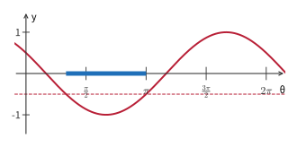
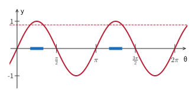
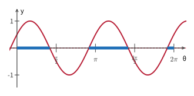

ホーム ＞ 数学II ＞ 三角関数の方程式・不等式・最大最小
別冊練習問題 3 の解答 三角不等式
(1) \(0\leqq\theta<2\pi\) のとき、不等式 \(\cos\left(\theta+\dfrac{\pi}{3}\right)\leqq- \dfrac{1}{2}\) を解け。
\(t=\theta+\dfrac{\pi}{3}\) とおいて範囲を調べる
\[\dfrac{\pi}{3}\leqq t<\dfrac{7 \pi}{3}\]グラフで \(y=\cos\,t\) と \(y=- \dfrac{1}{2}\) の上下を見る
\(\cos\,t\leqq- \dfrac{1}{2}\) を満たす部分を、グラフ（または単位円）から読む。境界は \(\cos\,t=- \dfrac{1}{2}\) の解。
\(\theta\) の範囲に直す
\(\theta\) のグラフにして図に示す（青い太線が答えの範囲、赤い破線が \(y=- \dfrac{1}{2}\)）。

答え
\[\dfrac{\pi}{3}\leqq\theta\leqq\pi\]【答案】
\[\dfrac{\pi}{3}\leqq\theta\leqq\pi\]答
(2) \(0\leqq\theta<2\pi\) のとき、不等式 \(\sin\left(2\theta\right)\geqq\dfrac{\sqrt{3}}{2}\) を解け。
\(t=2\theta\) とおいて範囲を調べる
\[0\leqq t<4 \pi\]グラフで \(y=\sin\,t\) と \(y=\dfrac{\sqrt{3}}{2}\) の上下を見る
\(\sin\,t\geqq\dfrac{\sqrt{3}}{2}\) を満たす部分を、グラフ（または単位円）から読む。境界は \(\sin\,t=\dfrac{\sqrt{3}}{2}\) の解。
\(\theta\) の範囲に直す
\(\theta\) のグラフにして図に示す（青い太線が答えの範囲、赤い破線が \(y=\dfrac{\sqrt{3}}{2}\)）。

答え
\[\dfrac{\pi}{6}\leqq\theta\leqq\dfrac{\pi}{3}\ \text{または}\ \dfrac{7 \pi}{6}\leqq\theta\leqq\dfrac{4 \pi}{3}\]【答案】
\[\dfrac{\pi}{6}\leqq\theta\leqq\dfrac{\pi}{3}\ ,\ \dfrac{7 \pi}{6}\leqq\theta\leqq\dfrac{4 \pi}{3}\]答
(3) \(0\leqq\theta<2\pi\) のとき、不等式 \(\cos\left(2\theta- \dfrac{\pi}{3}\right)>0\) を解け。
\(t=2\theta- \dfrac{\pi}{3}\) とおいて範囲を調べる
\[- \dfrac{\pi}{3}\leqq t<\dfrac{11 \pi}{3}\]グラフで \(y=\cos\,t\) と \(y=0\) の上下を見る
\(\cos\,t>0\) を満たす部分を、グラフ（または単位円）から読む。境界は \(\cos\,t=0\) の解。
\(\theta\) の範囲に直す
\(\theta\) のグラフにして図に示す（青い太線が答えの範囲、赤い破線が \(y=0\)）。

答え
\[0\leqq\theta<\dfrac{5 \pi}{12}\ \text{または}\ \dfrac{11 \pi}{12}<\theta<\dfrac{17 \pi}{12}\ \text{または}\ \dfrac{23 \pi}{12}<\theta<2 \pi\]【答案】
\[0\leqq\theta<\dfrac{5 \pi}{12}\ ,\ \dfrac{11 \pi}{12}<\theta<\dfrac{17 \pi}{12}\ ,\ \dfrac{23 \pi}{12}<\theta<2 \pi\]答